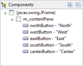
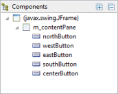
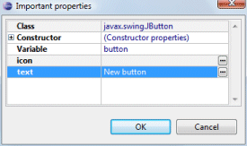

Here is the list of Swing Designer preference pages:
Default form width & height
These preferences control the default form size used for any window or dialog created by Swing Designer.
Highlight containers without borders
This preference determines whether Swing Designer draws a dotted rectangle around borderless JPanels.

Show text in components tree
This preference determines whether the text label of a widget (like a button, label, etc.) is shown next to the widget's name in the Component Tree.
 
Show important properties dialog on component adding
This preference controls whether the important properties dialog is shown whenever a new widget is created. The important properties dialog provides access to the widget's name, text and icon properties and style settings.

Automatically activate direct edit on component adding
This preference controls whether direct edit mode is automatically invoked when a new component is added to the window. When this option is enabled, it makes it easy to immediately set the text label on a widget as soon as it is created.